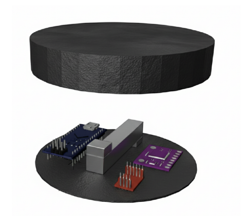
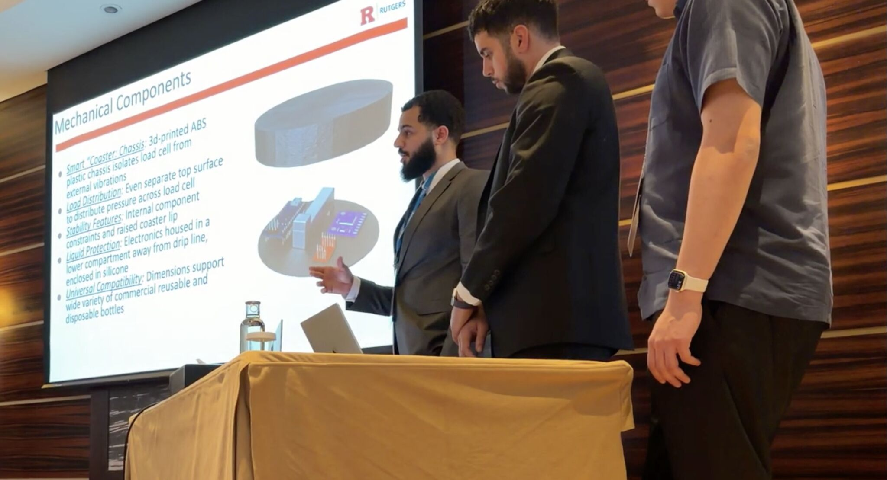
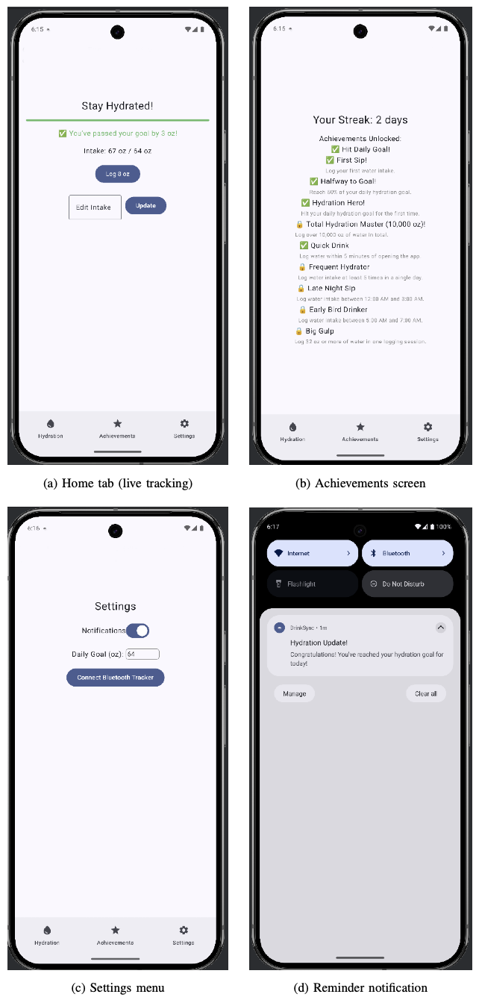

DrinkSync — Hydration Tracker

Overview
DrinkSync is a sustainable, universally compatible hydration tracking system that turns any reusable bottle into a smart IoT device. Built around an Arduino Nano, an HX711 load cell amplifier, and an MPU6050 motion sensor, it tracks water intake with sub-gram precision and streams that data over BLE to an Android companion app for real-time visualization, reminders, and gamified goal tracking. The project was co-authored and presented as a peer-reviewed IEEE paper.
My Role
I led the embedded systems side of the project: programming the microcontroller to process real-time sensor data and calculate fluid consumption, and engineering the hardware (Arduino Nano, HX711 load cells, MPU6050 IMU) that measures water intake and user activity. I also managed the project through its full development lifecycle, from concept to functional prototype, and built the Kotlin Android app with BLE streaming, real-time data visualization, and gamified goal tracking.
Tech Stack
Gallery


